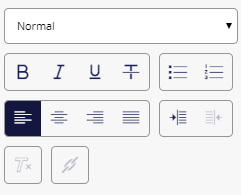

Horizon エディタでリッチ テキスト フィールドを編集する¶
Horizon エディタでページ上のリッチ テキスト フィールドを選択すると、リッチ テキストの書式設定ツールが右側のペインに表示されます。
注釈
あなたのウェブサイトのスタイルシートやテンプレートは、どのようなフォーマットやスタイルを適用できるかを決定します。
段落にスタイルを適用するには
段落をクリックし、[スタイル] フィールドのドロップダウン メニューからスタイルを選択します。
段落に整列、箇条書き、番号付けなどの書式設定を適用するには、次の手順に従います。
段落をクリックしてから、右側のペインで該当するボタンをクリックします。
テキストに太字や斜体などのフォント形式を適用するには。
フォーマットするテキストを選択してから、右側のペインの該当するボタンをクリックします。
書式を削除するには。
フォーマットされたテキストを選択し、[フォーマットの削除]
 をクリックします。
をクリックします。
リッチ テキスト フィールドにリンクを作成することもできます。